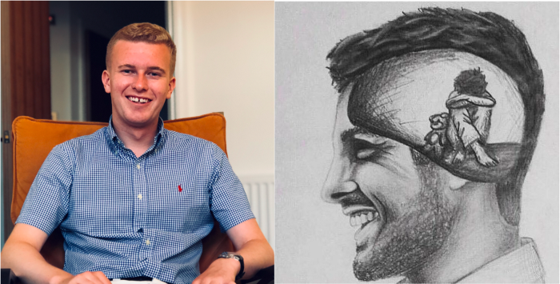

(Updated 21/08/2021: I originally shared this post on Medium in 2018, It's Okay to not be Okay). I've also added it to my blog.
Hello 👋🏻, I’m James! I’m 23, live in York and work as a Software Engineer. I’ve struggled with Generalised Anxiety Disorder for as long as I can remember. It’s been a big part of my life but I’ve always been very guarded about it; partly due to embarrassment, partly due to not knowing how to deal with it and partly due to not knowing how people would react to it. This has made it really hard to talk but over time I’ve come to accept that it’s part of who I am, and I shouldn’t be ashamed about it. 😊
It’s been a long, tough journey, but after 12 years since it first became a problem, I now feel that I’ve very nearly won my biggest battle! 💪🏻 As the years have gone by, I’ve gradually become more and more open about it and have started talking to more and more people. It feels like the right time get everything out there so I’ve decided to create this blog to share my story and battle with anxiety. Naturally, I’m a bit jittery about it; but I think it’s the right thing to do and will be a big step for me moving forwards.
I also really hope that it helps others that are suffering with anxiety and other mental illness. Mental health currently has a stigma attached to it, and I hope this is my small contribution in breaking the stigma. I have no doubt that some of the things I’m going to write about will resonate with many people who are currently suffering in silence. I really hope the blog encourages them to speak out and get the support they need. 👍🏻
In this first post, I think it makes sense to go through the first 23 years of my life, talk about everything I’ve experienced with anxiety and get it out there! Being a relatively introverted, British guy 🇬🇧; I don’t find talking about myself particularly easy. I feel pretty uncomfortable about some of stuff I’m going to write about in this post and am cringing at the the number of times I’m going to have to write ‘I’! But I think it’s the right thing to do. It’s a bit of an essay, so get your popcorn ready, here we go!
I was really lucky to have a fantastic start in life! 🙌🏻 I was born in Scarborough (affectionally known as Scarbados! ☀️) and spent the first 18 years of my life living there. I am extremely blessed to have been brought up by the most loving, caring family I could possibly wish for and they have given me everything. I am incredibly grateful for everything they have done for me.
Looking back, I’ve got nothing but extremely happy memories of my early childhood and time at primary school. I had an amazing group of friends, played as many different sports as I possibly could, took part in school productions, and was just a really, really happy kid. I absolutely loved life, threw myself into everything life had to offer and hadn’t got a care in the world. Exactly how it should be at that age.
During these early years, I developed a huge love of tennis 🎾 from my Grandparents and played it as much as I possibly could. As the end of primary school neared, I realised I wanted to continue this passion as much as possible, so decided to go to a different secondary school to most of my primary school friends. It meant I could play tennis before and after school and also play for the school team up and down the country.
I left primary school with really happy memories and was excited to start secondary school.
I started secondary school with much excitement but was immediately struck by how vastly different it was to my primary school. My primary school had been extremely friendly and welcoming, but somehow my new school felt entirely the opposite. I made some good friends but there were also a fair few people I didn’t see eye to eye with. 😬
During my first year of school, I started to notice I was becoming increasingly nervous about situations I previously hadn’t batted an eyelid at. Before playing sports matches, giving presentations, or just answering questions in class; I noticed my stomach being in a knot, my mouth drying up and just feeling a bit shaky. 😟 I couldn’t understand why, because all of these things had previously caused me no problems whatsoever. I presumed it was just a phase that everybody went through and it would pass sooner rather than later. Unfortunately, this was not the case and the problem escalated quite quickly. I found that the more I told myself I had nothing to be anxious about, the worse it got; and I just couldn’t understand this for the life of me. The thing I found most strange was that I was only anxious before the event, during the event I was usually absolutely fine.
Looking back, I remember it getting to the point where I was so anxious before each day of school, that I couldn’t eat breakfast. I was embarrassed and ashamed of how I was feeling and couldn’t understand how I had gone from being so confident and happy at primary school; to being so crippled by anxiety at secondary school. This embarrassment naturally meant I was very guarded about it, so only my immediate family knew about what I was going through. I really didn’t want anyone at school to know what I was going through so I learnt how to hide my anxiety and appear confident, relaxed and happy on the outside even if I was feeling really anxious inside. This is a trait that became a habit and whilst it proved useful in certain situations, its long term effects have been counter-productive. It made it easy for me to bottle things up because nobody knew when I was actually feeling anxious and therefore were unable to help me. I am often told that I’m a ‘smiley’ person 😁. So over the years, whenever I’ve told someone that I have an anxiety disorder; they are usually quite surprised and the usual response is “Wow, I would never have known!”. I’m obviously a great actor so if any Hollywood producers are reading this, you know where I am! 😜
As secondary school went on, certain situations were starting to cause me such anxiety that I began to have episodes where I would experience very intense physical symptoms but for a relatively short period of time. My stomach would feel horrifically tense, my chest and neck would tighten, and my breathing would become extremely shallow and fast. I’d feel very sick and often throw up even though I was desperately trying not to. 🤢 In particularly bad episodes, I would start hyperventilating, feel very faint and be unable to move my hands because they felt so numb. It was awful, but I had absolutely no idea how to stop it happening. 😣 It may sound silly, but at the time I didn’t recognise that it was my anxiety causing these intense physical symptoms. In my mind, health issues were things such as breaking your arm, having a migraine or having flu. I had no idea about mental illness and didn’t understand that thoughts in your head could have such a profound impact on your physical health. It’s only in recent years that I’ve realised all these episodes were panic attacks. 😔
The panic attacks began to happen more and more often and they became a major problem. When I was experiencing such physical symptoms, it was impossible for me to present myself how I wished so I became anxious about having panic attacks in public. It was a tough time but my parents were hugely supportive with what I was going through and recognised I needed some help. I started to see a Psychologist 👨🏼⚕️ and also tried Hypnotherapy and Acupuncture. I don’t really remember too much about this but I think it helped a bit and I was a slightly more relaxed at school. However, at this young age I didn’t know anything about mental health and didn’t really appreciate the severity of what I was going through.
My anxiety began to improve slightly but then when I was 14, my Dad was diagnosed with cancer. Understandably this had a profound impact on my anxiety and I was essentially in a constant state of worry for 2 and a half years. It was a really tough time but my family and I were all hugely relieved and grateful when my Dad was given the all clear. I am immensely proud of my Dad for having the fight and determination to beat such a dreadful illness. The treatment cycles were incredibly tough and the resilience he showed has been truly inspirational. I am also hugely proud of my Mum; for having the strength to support my Dad, carry on with her job, and also continue to support me with my anxiety. I will never forget the strength my parents showed in these years, it was truly incredible.
Whilst I was hugely relieved that my Dad was okay, the years of constant worry had taken its toll on me and my anxiety had become a very stubborn habit. No matter what I tried to do, my mind seemed to constantly try and find things to worry about. I was utterly helpless and couldn’t do anything to stop it. 😩
I am lucky that I have always been a hugely driven and motivated person. But during secondary school, these qualities took an unhealthy turn when I started to develop perfectionist tendencies and became extremely self-critical in everything that I did. Nothing I did was ever good enough; and when I did do well at something, it was always down to luck rather than judgement. I found it very difficult to appreciate my successes and a classic example of this was when I got my GCSE results. I achieved 9 A*/As and 1 B but take a wild guess at which grade I thought about most and beat myself up about…! 🙄 This self-criticism continued to be a problem and whilst I didn’t realise at the time, it was a driving factor behind the anxiety I was experiencing.
My time at secondary school has had a profound impact on my mental health and I can link many of my more recent struggles back to these years. By the end of Year 11, I had become a shy, withdrawn teenager with a huge lack of self-confidence; the complete opposite to what I was at primary school and this upset me greatly. 😢 It was a tough time but it made me develop a resilience to always hang in there when the going got tough. I was ready for a fresh start so was excited to start sixth form and be back with all my primary school friends.
Once I’d got past the initial anxiety of starting sixth form, I settled in really well and it was fantastic to be back with my primary school friends. In turn, my anxiety levels dropped, my self-confidence increased and I found myself quite enjoying life again. However, the background noise of anxiety was still there because it had become such a habit during secondary school. My subjects at sixth form were Maths, Physics, Computing and Economics; and it was great to finally do work that I actually found interesting. However, as the workload ramped up, so did my anxiety and it started to become a major problem again. My subjects were pretty exam intensive so during exam seasons, where I would spend pretty much all my time revising, my anxiety really flared up. I started to experience panic attacks again and it was difficult to focus on work.
At the same time, there was also the thought of University in my mind. It was a very daunting prospect but I knew it was something I had to do if I wanted to achieve my career goals. I was still extremely motivated and driven, and I knew I had to force myself to go. I began the process of applying to Universities and went for interview days at all of them. All my choices were competitive Universities and I remember feeling a huge amount of self-induced pressure before each interview day. I had panic attacks before going to York, Durham, Sheffield and Lancaster. Clearly, this isn’t ideal when trying to present yourself in your best light! The Sheffield one was particularly bad and I remember it vividly; it happened on a crowded train so I couldn’t ‘escape’ to sort myself out. I started hyper-ventilating but somehow managed not to throw up. It was horrible but I forced myself to push through and did the interview no problem. I was relieved when I managed to get offers from all my choices.
From there on, sixth form went extremely quickly and it’s all a bit of a blur. I worked really hard and managed to get the grades I needed to get into York to study Computer Science. It was a huge relief and for one of the first times, I was actually proud of what I had achieved. Whilst I was extremely anxious about going to University, I saw it as another fresh start and was optimistic that my anxiety would improve once I got there. 🙏🏻
As expected, I was extremely nervous about going to University. Moving away from home to a new city, by yourself, for the first time is a big deal for anyone, let alone someone with an anxiety disorder. However, I had heard many times that University would be “the best years of your life” and I was determined to give it shot. After all, maybe it would be the answer to my anxiety problems. I grit my teeth and forced myself to go.
I was pleasantly surprised when I actually coped with the first few weeks pretty well, and this was a big confidence boost. It felt like I’d left all the baggage of my anxiety in Scarborough, and I was ready to restart my life! It was exciting to meet so many likeminded, new people, all with different stories to tell. I made some really great friends, was enjoying my course, and was also chosen to play in the tennis 1st team against other unis.
It was all going so well, but then, like sixth form, when the workload started to increase, my anxiety decided to make another delightful appearance. I’m still not 100% sure what triggered it but it escalated very quickly and was back with a vengeance. Like secondary school, I started to become very anxious before tennis matches, public speaking and for the first time, social situations. I couldn’t understand the latter for the life of me. I have always enjoyed being with people and love nothing more than dishing out friendly (often poor!) banter to my mates and getting a fair bit back myself. I had made some fantastic friends at uni and really enjoyed their company, yet for some crazy reason I was getting really anxious about going out to restaurants, pubs, bars, or any other social situation. To start with, the anxiety only made itself known before the event. But over time, it got worse and worse until I was experiencing severe anxiety before and during the situations. I started to have panic attacks during these events and once again, I felt very embarrassed and ashamed of it. Naturally, I wanted to try and hide it as much as possible, so told very few people at uni. The only people I really opened up to were my housemates and they were incredibly supportive about it.
The panic attacks became more and more regular until I was in a constant state of severe anxiety. Pretty much everything I did in life became a problem and I was utterly miserable. Some particularly vivid memories of panic attacks were at a tennis match in Sheffield (fortunately I made it to the loo!), at the check-out in Morrisons, walking to the pub quiz with my housemates, getting my hair cut at the barbers and before a housemates birthday at a pottery painting place. Just leaving the house and thinking who I might bump into was causing me anxiety. I was at absolute rock bottom, and I wouldn’t wish what I went through on anyone. It might sound a bit dramatic, but I was just surviving, not living.
To add to the fun, my self-criticism decided to join the party. I became very harsh on myself about the way I was feeling and couldn’t believe I’d let myself get to that point. Words along the lines of “get a grip” were regularly going through my mind and this just amplified the anxiety. This was a bit ironic, because if it had been one of my friends that had been experiencing the anxiety, I would have shown a great deal of compassion, understanding and empathy. But because it was happening to me, I was unable to show the same compassion.
I was having so many panic attacks, that I started to become anxious about having them in public. So I was anxious, about being anxious, because then I might have a panic attack (really logical thinking..!). And that brings us nicely onto the lovely subject of exams. Once again, I had chosen a subject that was extremely exam intensive and exam seasons were brutal. I was not only anxious the exam content, but also about having a panic attack in the exam room and ruining my chances of getting a good mark. For the final year of uni, I actually approached the university’s exam office and asked if there was anything they could do to help me. They recognised the severity of what I was going through and offered me 25% extra time in all exams in case I had a panic attack. However, I declined their offer because I felt like a fraud who didn’t deserve the extra help, and would have an unfair advantage over my course-mates. During my final exam season, I had a panic attack at the beginning of one of my exams. My initial reaction was “Ohhhhh boyyy, here we go!” (Maybe slightly ruder language!), but fortunately I managed to calm myself down in about 15 minutes and was able to continue with the exam. Ironically, I managed to get one of my best exam marks so maybe if I’d had panic attacks in a few more exams, I might have got a 1st! 😉
As university went on, I began to become a bit more open about my anxiety. At the end of my first year, I recognised I needed some help so decided to start Cognitive Behaviour Therapy (CBT). It was a big relief to get everything out and talk to someone who had clearly seen it all before. My therapist was really understanding and we got on really well. I’m not sure that more laughs have ever been had in a counselling room! I went to CBT for ~18 months and whilst I didn’t improve a huge amount whilst I was going, it prevented me from getting any worse and helped me get through uni. It was also the first time that I became aware of strategies and techniques to manage the anxiety, and these have been invaluable in recent years. Before my final exam season, I again recognised that I needed some help so went to my GP to see if there was any medication I could take to get me through the exams. I was prescribed Propranolol, a beta-blocker mainly used to treat high-blood pressure, but also anxiety. The tablet is designed to slow your heart rate, and hence reduce the physical symptoms that the anxiety causes. Whilst the physical symptoms didn’t disappear, they did reduce to a more manageable level and that helped me get through the exam season.
My three years at uni were the toughest years of my life but there was absolutely no way I was going to quit. I honestly didn’t once consider throwing in the towel. I was all too aware of the doors a Computer Science degree from York could open, and there was absolutely no chance I was letting that opportunity pass me by. Somehow, I managed to graduate with a 2.1 and I am immensely proud of having enough resilience and determination to achieve this. At times I was really hanging in there, but I’m so glad that I was able to grit my teeth, tough it out and come through the other side. By the end of uni, I was in a pretty bad way so took the summer off to clear my head and try and sort myself out. I recognised I couldn’t go on like I was, so decided to prioritise my mental health above everything else and try to reduce my anxiety levels to a more manageable level once and for all.
Since graduating two years ago, my anxiety has improved massively and I am really starting to enjoy life again. 🙌🏻 In the last six months especially, I have started to feel bursts of happiness and excitement that I haven’t truly felt since I was 11 years old! I’ve put a lot of work into achieving this and am now starting to reap the rewards of my efforts. By making changes to my lifestyle, behaviour, diet; forcing myself to be exposed to situations that make me anxious, and regularly practicing meditation and mindfulness 🧘🏼, I am beginning to feel like my old self. It’s the strangest sensation that I can’t really describe, but it feels like I’m being reacquainted with an old friend that’s been missing for many years. The changes that I’ve made have all been relatively minor, but they’ve made a huge difference. I will go into much more detail about these in a future blog post.
Furthermore, the panic attacks that I once experienced have dropped massively in regularity. Whilst I still experience them every now and I again, I have gained so much knowledge in knowing how to deal with them, that I can usually get them under control within a matter of minutes. And even if I can’t, I don’t beat myself up about it and just recognise that it’s part of who I am. I don’t try and fight it, but instead am compassionate to myself and just feel how I feel. This feels like a much healthier approach to have. 😊
Whilst I am still as motivated and driven as ever, my perfectionism and self-critical tendencies have also massively dropped. I feel that I’ve now got a healthy balance between always giving 100% and trying to be the best I can be, to recognising that I am a human being and it’s okay to make mistakes and get things wrong. Naturally, this has also helped my anxiety and I am far less self-critical if I’m feeling anxious.
Since graduating from uni 🎓, I have worked as a Software Engineer mainly building apps on all iOS platforms. Whilst work can be pretty intense and I often feel tired after a full day of programming, I do really enjoy it. Everyone is really friendly and most of the time we have a decent laugh! It’s great that the people I work with are friends rather than purely colleagues. They all know about my anxiety, and that feels like a big thing because it means I don’t have to hide it. Everyone has been really supportive, and understands that I may have the odd day where I’m not quite on it.
Around 6 months ago, I moved into an apartment and absolutely love it. Every time I come home, I still have to pinch myself that I actually live here! Understandably, I was really excited but also a bit nervous about living on my own for the first time. So I’m really pleased that I’ve been able to cope with the change and am thriving in it. I think it’s a measure of how far I’ve come. Those who follow me on Instagram 📷 are all probably sick to death of seeing pictures of it, sorry! But I’m really proud of my flat so you’ll probably have to put up with a few more, sorry again!
As my anxiety has improved, I’ve been able to throw myself into more and more situations that were previously making me really anxious, particularly social situations. Since uni, I’ve made a fantastic new group of mates who are all legends. They have all been really supportive and it feels good to be able to just go for a pint, have a chat about each others problems and try to help one another overcome them. I’m now at a point where going out for a meal, or drinks etc is no longer a problem and that feels so good! Whilst certain situations still make me anxious, panic attacks at the thought of getting a hair cut are no longer a thing! Next week, it’s my work Christmas do and I haven’t batted an eyelid at it. Two years ago I wasn’t able to go to the Christmas do and last year I was so anxious about it from the beginning of November! That’s how far I’ve come! My love of sport has also returned and I’m now playing tennis, squash and football every week with a bit of golf thrown in every now and again! I’m busy doing something after work pretty much every day, and whilst it sometimes feels they’re aren’t enough hours in the day, it feels great that my social life is the best it’s ever been!
Last month, I started to take Setraline, an anti-depressant used to treat depression and anxiety. Whilst I’ve improved massively over the last couple of years, my GP and I agreed I could still do with an extra helping hand that the tablets give. We also agreed that I should come off the Propranolol which I have been taking for about two and half years. It’s still early days, but I’ve already started to see the positive effect that the Setraline is having. Whilst the first week of side-effects (feeling sick, headaches, tiredness) wasn’t great, I’ve noticed recently that I’m feeling happier in my myself, and my anxiety levels have dropped even further. Little things such as singing in the shower (sorry neighbours!) and randomly having the urge to dance indicate that the tablets are doing something! Either that, or I’ve just discovered my urge to be the next Chris Martin! 😉 Fingers crossed the tablets keep on having a positive effect!
As I’ve started to be able to take a step back from my anxiety, I have began to appreciate the enormous battle I’ve been through. I am proud of my achievements in academia, my career, living in an apartment I could only dream of, and making some fantastic friends along the way. But without any doubt, I am most proud of hanging in there, and having enough resilience and determination to come through the other side. At times it has been absolutely brutal. But I now feel incredibly battle-hardened and have no doubt that the resilience which I have developed, will serve me very well against whatever life throws at me.
Whilst I am hugely excited and optimistic for the future, I am also realistic. My anxiety has had such a profound impact on me that it will likely stay with me for the rest of my life. I accept it’s just one of the personality traits I have, and is part of what makes me the person I am. And that’s perfectly okay. I will still continue to have the odd bad day where I feel anxious for no apparent reason. But I have learnt so much over the years that I now have the tools, techniques and knowledge to deal with it so much better.
Those who are sadly misinformed about mental health will say that suffering from mental illness is mentally weak. In fact it’s quite the opposite. Forcing yourself to do something when every sinew of your body is telling you otherwise, requires huge courage, resilience and determination. I am really proud to have shown these qualities, time and time again, for so many years.
Everyone goes through tough times, it’s part and parcel of being a human being. Everyone has “their thing”. But if you’re reading this with something troubling you, I gently encourage you to talk to someone about it. It’s okay to not be okay. I was very guarded about my anxiety, and whilst I don’t regret that because I was doing what I thought was best at the time, I can now see that being more open about it would have been more beneficial. As I’ve gradually opened up to more and more people, my anxiety has got better and better. That definitely isn’t a coincidence. Talking about mental health is really difficult, particularly if you are embarrassed and ashamed of the way you feel. Naturally, it makes sense to avoid doing it, but unfortunately this will only make matters worse. We only get one mind so I encourage everyone reading this to care for, and look after theirs.
To all those that have helped me over the years, I offer my sincere thanks. I am incredibly lucky to have had such supportive family and friends around me and I don’t know what I would have done without them. When suffering with mental illness, small things often make a big difference; and when someone goes out of their way to help you, it really means a great deal. Everyone has been amazing but I would like to say particular thanks to my Mum, Dad and Sister. I am incredibly grateful for all their love, support and encouragement they have given me over the years. I know it can’t have been easy for them watching me suffer, but they have been truly incredible in helping me come through my biggest battle.
I’m not ashamed to admit that there’s been a few tears writing this; such is the journey I’ve been on, and the sheer relief I feel of finally being able to talk about it. 🥲 After 12 years of bottling this up, it feels really good to be open about it! 😊